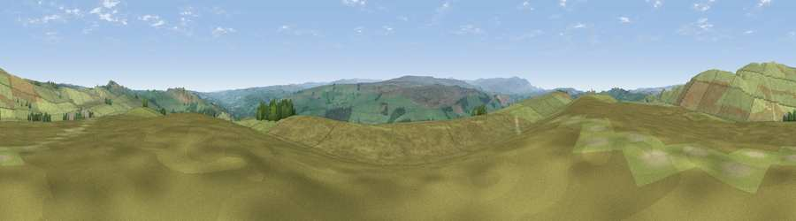

Viewpoint near Melkridge
#14912 in England · top 40% of its area beats it · near Melkridge · path 294 mWhere it is
The exact computed spot (NY 74525 65925). Click the marker for map links.
Public access: the nearest public right of way is about 294 m away — the final stretch may cross private land. Computed from Natural England's CRoW access layer and OpenStreetMap rights of way — not the legal definitive map. Always verify locally.
The view, rendered

A 360° render of this exact spot computed from the terrain model, tree cover and land cover — summer colours, afternoon light, calibrated against photographs of famous viewpoints. Real trees, hedges and buildings will differ in detail.
The panorama
Grey silhouette: terrain skyline in each direction (720 bearings, Earth curvature and refraction included). Dashed green: skyline with trees (+15 m) and buildings (+8 m) as obstacles. Blue strip: how far the ground is visible on each bearing.
Where the view opens
Wedge length = distance to the farthest visible ground on that bearing (vegetation-aware). Rings at 10, 25 and 50 km.
What fills the view
95% grassland · 5% woodland
Angular shares of the visible panorama (visual magnitude), not map area. Landscape diversity 0.10 (0–1 Shannon).
Key numbers
More beautiful places nearby
The staircase of upgrades: each row has a higher view potential than everything closer. Driving times are estimates from straight-line distance, calibrated against real road routing — check an actual route before setting out.
| Place | Direction | Drive | Score |
|---|---|---|---|
| Viewpoint near Melkridge | NW · 2 km | ~5 min | 69.0 |
| Viewpoint near Melkridge | NNW · 2 km | ~5 min | 70.6 |
| Viewpoint near Bardon Mill | NE · 7 km | ~14 min | 71.0 |
| Viewpoint near Halton Lea Gate | SW · 14 km | ~25 min | 72.0 |
| Viewpoint near Hallbankgate | WSW · 16 km | ~29 min | 73.4 |
| Cold Fell | SW · 17 km | ~30 min | 74.0 |
| Whinny Fell | WSW · 19 km | ~33 min | 74.2 |
| Viewpoint near Castle Carrock | SW · 20 km | ~33 min | 76.9 |
54.98726, -2.39964 · source: screening · position refined by local search. Computed location — check access rights before visiting.